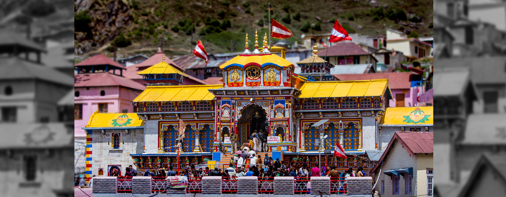

CHAR DHAM
Uttarakhand, also known as Devbhoomi or the Land of Gods, is home to numerous temples and welcomes devotees all year round. Among the countless religious sites and circuits that devotees visit in Uttarakhand, one of the most prominent is the Char Dham Yatra. This Yatra or pilgrimage is a tour of four holy sites - Yamunotri, Gangotri, Kedarnath and Badrinath – nestled high up in the Himalayas. In Hindi, 'char' means four and 'dham' refers to religious destinations.
The high-altitude shrines remain shut for around six months every year, opening in summers (April or May) and closing with the onset of winter (October or November). It is believed that one should complete the Char Dham Yatra in a clockwise direction. Hence, the pilgrimage starts from Yamunotri, proceeds towards Gangotri, onto Kedarnath, and finally ends at Badrinath. The journey can be completed by road or by air (helicopter services are available). Some devotees even do a Do Dham Yatra or a pilgrimage to two shrines - Kedarnath and Badrinath.
The Yamunotri temple, lodged in a narrow gorge close to the source of River Yamuna (the second-most sacred Indian river after River Ganga) in Uttarkashi district, is dedicated to Goddess Yamuna. The district of Uttarkashi is also home to Gangotri dedicated to Goddess Ganga, the most sacred of all Indian rivers. Located in the Rudraprayag district lies Kedarnath, dedicated to Lord Shiva. Badrinath, home to the sacred Badrinarayan Temple, is dedicated to Lord Vishnu. The Char Dham Yatra is as divine as it is arduous but fulfills the soul!
Kedarnath
One of the most revered temple destinations of India, Kedarnath town is nestled in the mighty Garhwal Himalayas. The town, built around the revered Kedarnath temple, is located at an altitude of 3,580 m, near Chorabari glacier, which is the source of the Mandakini river. Dedicated to Lord Shiva, the ancient temple has exquisite architecture and is built of extremely large but evenly shaped grey stone slabs. A conical rock formation inside the temple is worshipped as Lord Shiva in his “Sadashiva” form. The Kedarnath temple, dedicated to Lord Shiva, is a part of Char Dham pilgrimage circuit, and is one of the 12 Jyotirlingas of Lord Shiva in India. Behind the Kedarnath temple, stand the Kedarnath peak, Kedar Dome and other Himalayan peaks.
Gangotri
One of the char dhams (the most sacred pilgrimage circuits in northern India with four holy destinations), Gangotri, in Uttarkashi, is a small town with the temple of Goddess Ganga at its heart. A 12-hour drive from Rishikesh, Gangotri is nestled among lofty Garhwal Himalayan peaks, glaciers and dense forests, and is one of highest pilgrimages in India (approx 3,415 m). Other than its divine atmosphere, Gangotri offers stunning vistas all around. According to Hindu legends, the most sacred of all rivers, Ganges (or Ganga), descended from heaven to earth at Gangotri, when Lord Shiva released the mighty river from his locks. The actual origin of the river is at Gaumukh in the Gangotri glacier, 19 km away from Gangotri and is accessible by trekking. After it originates from Gaumukh, the river is known as Bhagirathi and it acquires the name 'Ganga' after the river Alaknanda merges into it near the town of Devaprayag. Kapat is open now for darshan.

Yamunotri
Yamunotri is a part of Char Dham (along with Gangotri, Kedarnath and Badrinath), the four most revered Hindu pilgrimages in the Himalayas. The small mountain hamlet, with the Yamunotri Temple at its centre, attracts thousands of devotees every year and is the commencing point of the Char Dham Yatra pilgrimage (May to October), which proceeds from Yamunotri to Gangotri and finally to Kedarnath and Badrinath. Lodged in a narrow gorge, close to the source of the Yamuna, the Yamunotri Temple is dedicated to Yamuna, the second-most sacred river after the Ganges. A dip in River Yamuna is said to protect one from untimely death. Devotees either walk or ride a palanquin or a pony to reach the temple (around 3,233 m above sea level) from Janki Chatti, a steep trek of about 3 km that takes about 3 hours.

Badrinath
The Badrinath Temple also known as the Badrinarayan Temple, located in Uttarakhand's Badrinath town, is one of the Char Dhams (four important pilgrimages) in the state. There are four pilgrim-destinations namely Yamunotri, Gangotri, Kedarnath, and Badrinath, collectively known as Char Dham. These pilgrimage centres draw large number of pilgrims each year, thus becoming the most important hubs of religious travel in the whole of Northern India.
Badrinath is located at an elevation of around 3,100 m. Located in the Garhwal Himalayas, on the banks of the Alaknanda river, this sacred town lies between Nar and Narayana mountain ranges. The temple is believed to have been established by sage Adi Shankaracharya in the 8th century. With Lord Vishnu as its presiding deity, the temple remains open for six months in a year. In winter it becomes inaccessible due to heavy snowfall.
Go Back To Heritage